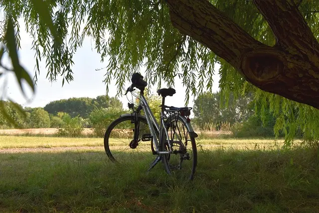
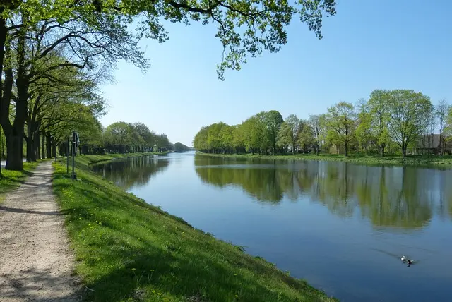
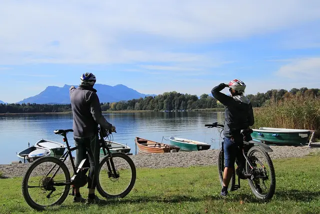

Want to bike through Germany?
Get Ready then! ↓Step 1. Get a bike
Getting a working, reliable, comfortable bike should be your first priority. Without a bike you will not be able to get anywhere to.
Step 2. Choose a proper day and desirable weather
Keep in mind that in winter it is cold and icy, while in summer it might be too hot and you will need to drink more water. In fall, there might be a lot of rain. So be wise.
Step 3. Decide wether you want to travel alone or with a team.
Traveling alone gives you an opportunity to ponder a lot and enjoy peaceful quietness, while teaming up with somebody can give you lots of new opportunities.
Now go and check out different places and routes that you can visit in Germany while you will be cycling.